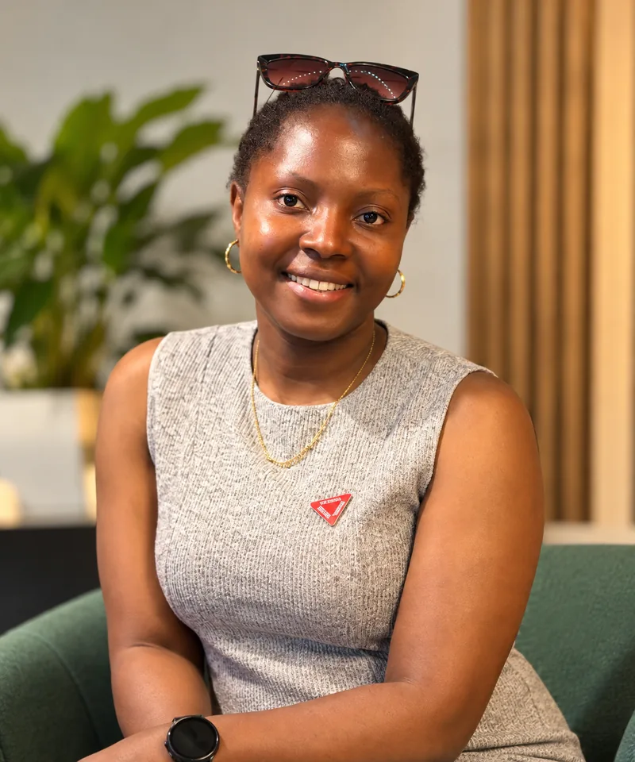

Turning sustainability data into practical action.
I analyse emissions, climate risk and environmental systems. I work with stakeholders to turn the findings into evidence that supports informed decisions.
I have a background in urban planning and an MSc in Urban Environmental Management from Wageningen University & Research, specialising in Environmental Systems Analysis.
My experience spans urban and environmental consultancy in Nigeria and research and sustainability projects in the Netherlands. I work across GHG accounting, climate risk and environmental data analysis, using Python, SQL and GIS. I also facilitate stakeholder engagement and coordinate multidisciplinary teams.
My mission is to help organisations turn their sustainability data into practical action and business value. I am looking for roles in sustainability, ESG and environmental data, where sustainability, data and people intersect. I am based in the Netherlands and developing my Dutch (B1).
Featured work
All projectsGHG Inventory Analysis
Built a Scope 1 and 2 GHG inventory for two U.S. facilities using the GHG Protocol. Purchased electricity drove 82% of 1,598 tCO2e.
View projectComparative LCA of Beverage Packaging
Compared the carbon footprint of PET and aluminium packaging in a cradle-to-gate screening LCA. Aluminium cans carry about 3.6 times the GWP of PET bottles per litre.
View projectClimate Risk Exposure Index
Ranked 21 countries by physical climate-risk exposure, using CSRD (ESRS E1) and TCFD concepts.
View projectMy journey
Interests & Contributions
My interests
How environmental systems contribute to healthier, more inclusive and resilient places.
Understanding emissions, climate risks and resource use, and exploring practical opportunities for improvement.
How participation, collaboration and shared learning help turn sustainability ambitions into meaningful change.
What I bring
Investigating complex questions through quantitative and qualitative approaches.
Using quantitative, qualitative and spatial data to identify patterns, assess environmental impacts and communicate useful insights.
Engaging with diverse perspectives and building shared understanding.
Organising activities, aligning priorities and following through on tasks, timelines and commitments.
Beyond Work
Outside work, I enjoy exploring nature, discovering new places, reading and singing with a choir. These interests give me space to reflect, express myself and connect with people and the world around me.


Organisations I’ve worked with
- Digital
Society
School 

- Toyin Ayinde
& Associates 
Interested in working together?
Based in the Netherlands. Open to roles in sustainability, ESG and environmental data. CV available on request.